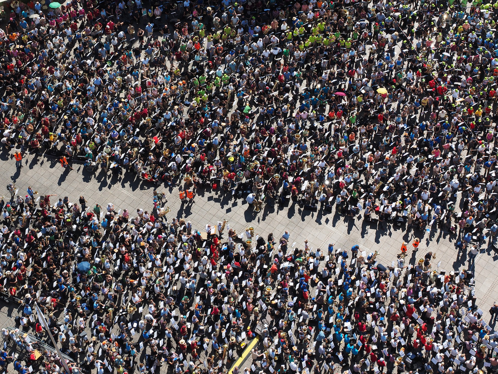

- Democratic Socialism:
- Democratic socialism combines socialist economic principles with democratic political systems. It advocates for social ownership of key industries and services, but within a framework of democratic governance.
- Market Socialism:
- Market socialism retains elements of market competition while also incorporating collective ownership of key industries and resources. It aims to balance economic efficiency with social welfare.